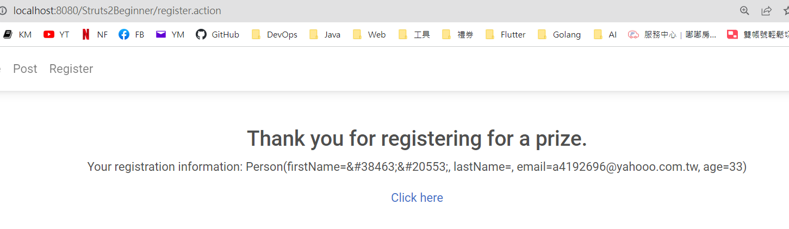

Struts2 + ValueStack + Form Validate
ValueStack
- 觀念：

參考資料：https://blog.csdn.net/qq_44757034/article/details/106838688
- 範例：
Action
@Namespace("/")
@Results(value = {
@Result(name = "hello", location = "/WEB-INF/jsp/hello.jsp") ,
@Result(name = "goodbye", location = "/WEB-INF/jsp/goodbye.jsp")
})
@Data
public class HelloAction extends ActionSupport {
private String paramName;
@Action(value = "hello")
public String hello() {
// Root
ActionContext.getContext().getValueStack().set("name", "root-ABC");
// Request
ServletActionContext.getRequest().setAttribute("name", "request-ABC");
// Request Session
ServletActionContext.getRequest().getSession().setAttribute("name", "session-ABC");
// Servlet Context
ServletActionContext.getServletContext().setAttribute("name", "servlet context-ABC");
return "hello";
}
}
JSP
<%@ page language="java" contentType="text/html; charset=UTF-8"
pageEncoding="UTF-8"%>
<%@ taglib prefix="s" uri="/struts-tags"%>
Action 屬性：<s:property value="paramName" />
<br>
請求參數：<s:property value="#parameters.paramName" />
<br>
請求屬性：<s:property value="#request.name" />
<br>
請求屬性：<s:property value="#attr.name" />
<br>
請求會話屬性：<s:property value="#session.name" />
<br>
上下文屬性：<s:property value="#application.name" />

請求參數
- Action：只要有 @Data 標註，S2 會自動依照請求參數的名稱，對應到 Action 屬性名稱相符的屬性。
@Namespace("/")
@Results(value = {
@Result(name = "hello", location = "/WEB-INF/jsp/hello.jsp") ,
@Result(name = "goodbye", location = "/WEB-INF/jsp/goodbye.jsp")
})
@Data
public class HelloAction extends ActionSupport {
private String paramName;
@Action(value = "hello")
public String hello() {
System.out.println(paramName);
return "hello";
}
}
- JSP：
<%@ taglib prefix="s" uri="/struts-tags"%>
<s:property value="paramName" />

Validate Form
只要在 Action 中 新增一個 validate 方法，把要驗證的邏輯寫進去。這樣每一次 Action 的請求，都會先經過 validate 方法，如果有錯誤，則將訊息透過 addFieldError 這種紀錄下來。如果沒有錯誤，則會接著呼叫 execute 方法，進而來到 View 的 JSP。
1、Action
import org.apache.commons.lang3.StringUtils;
import org.apache.commons.validator.routines.EmailValidator;
import org.apache.struts2.convention.annotation.Action;
import org.apache.struts2.convention.annotation.Namespace;
import org.apache.struts2.convention.annotation.Result;
import org.apache.struts2.convention.annotation.Results;
import com.example.struts.model.Person;
import com.opensymphony.xwork2.ActionSupport;
import lombok.Data;
@Data
@Namespace("/")
@Action(value = "register")
@Results(value = {
@Result(name = "success", location = "/thankyou.jsp"),
@Result(name = "input", location = "/register.jsp"),}
)
public class RegisterAction extends ActionSupport {
private Person person;
public String execute() throws Exception {
return SUCCESS;
}
public void validate() {
if (person == null || person.getFirstName().length() == 0) {
addFieldError("person.firstName", "First name is required.");
}
if (person == null || person.getEmail().length() == 0) {
addFieldError("person.email", "Email is required.");
}
if (person != null && !StringUtils.isEmpty(person.getEmail())) {
boolean isValid = EmailValidator.getInstance().isValid(person.getEmail());
if(!isValid) {
addFieldError("person.email", "Email is invalided.");
}
}
if (person == null || person.getAge() < 18) {
addFieldError("person.age", "Age is required and must be 18 or older");
}
}
}
- JSP：
(不加入MDB)
<%@ taglib prefix="s" uri="/struts-tags"%>
<h1>Registration Form</h1>
<s:form action="register">
<s:textfield name="person.firstName" label="First Name" />
<s:textfield name="person.lastName" label="Last Name" />
<s:textfield name="person.email" label="Email" />
<s:textfield name="person.age" label="Age" type="number" />
<s:submit value="Register" />
</s:form>
<s:fielderror fieldName="person.firstName" cssClass="error" />
<s:fielderror fieldName="person.lastName" cssClass="error" />
<s:fielderror fieldName="person.email" cssClass="error" />
<s:fielderror fieldName="person.age" cssClass="error" />
(加入 MDB)
<%@ taglib prefix="s" uri="/struts-tags"%>
<div class="d-flex justify-content-center">
<div style="width: 300px;">
<h2>Registration Form</h2>
<s:form action="register" theme="simple">
<s:fielderror fieldName="person.firstName" cssClass="error small-red-text"/>
<div class="form-outline my-2">
<s:textfield name="person.firstName" cssClass="form-control" id="firstName" required="true"/>
<label class="form-label" for="firstName" style="">First Name</label>
</div>
<s:fielderror fieldName="person.lastName" cssClass="error small-red-text"/>
<div class="form-outline my-2">
<s:textfield name="person.lastName" cssClass="form-control" id="lastName" required="true"/>
<label class="form-label" for="lastName" style="">Last Name</label>
</div>
<s:fielderror fieldName="person.email" cssClass="error small-red-text"/>
<div class="form-outline my-2">
<s:textfield name="person.email" cssClass="form-control" id="email" type="email"/>
<label class="form-label" for="email" style="">Email</label>
</div>
<s:fielderror fieldName="person.age" cssClass="error small-red-text"/>
<div class="form-outline my-2">
<s:textfield name="person.age" cssClass="form-control" id="age" type="number" />
<label class="form-label" for="age" style="">Age</label>
</div>
<button type="submit" class="btn btn-primary btn-block my-2">Register</button>
</s:form>
</div>
</div>
CSS
.error {
color: red;
}
.small-red-text {
font-size: 11px;
text-align: left;
margin-left: 10px !important;
}
ul.error {
list-style-type: none;
padding-left: 0;
margin: 0%;
}
- Test：
(1) 第一次不用顯示錯誤訊息，所以直接存取該JSP
http://localhost:8080/Struts2Beginner/register.jsp

(2) 直接按下提交，畫面會顯示錯誤訊息。

(3) 欄位接輸入後，且通過檢查後，才會顯示正確頁面。
